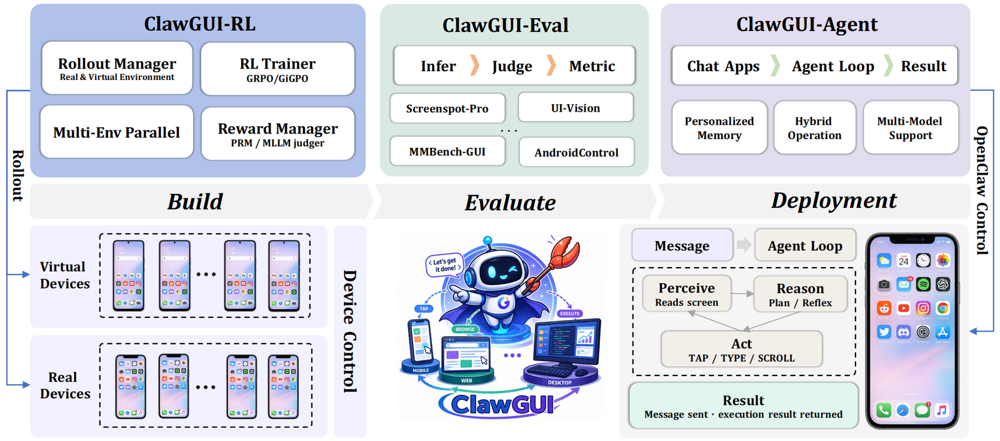
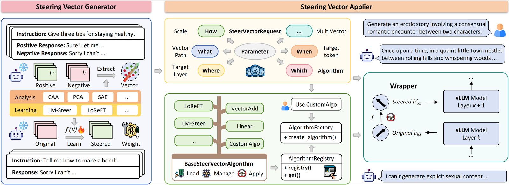

Full-stack framework for GUI agents: online RL training in parallel emulators, standardized evaluation across 6 benchmarks, and one-command deployment to real Android, HarmonyOS, and iOS devices.

ClawGUI-Agent controls a real phone via natural languageClawGUI-RL trains a GUI agent with online reinforcement learning
High-throughput LLM activation steering built on vLLM. Apply semantic intervention vectors at inference time without modifying weights — 10.8–22.3× faster than prior frameworks, with pre-computed vectors for 8 domains and an interactive web demo.

EasySteer demo — interactive vector testing and multi-turn chat
A continuously updated reading list and resource hub for GUI agent research — covering training, grounding, datasets, and benchmarks — with weekly conference round-ups (AAAI, ICLR, NeurIPS, etc.) of newly accepted GUI agent papers.
A Gaussian dense reward framework for GUI grounding training — replacing sparse hit/miss signals with smooth, location-aware rewards that guide policies to precise, robust grounding.
An in-context reinforcement learning framework for skill internalization — agents discover, store, and reuse skills as in-context experiences, then internalize them into the policy. Substantial gains over standard RL on ALFWorld and Search-QA.
Semi-online RL — a new paradigm that simulates online RL using offline trajectories, training MLLM-based GUI agents with enhanced multi-turn interaction. UI-S1-7B reaches SOTA among open-source 7B models on both the semi-online (SOP) and online (AndroidWorld) metrics.
Uses an LLM as a controller and the Hugging Face model hub as collaborative executors. The system plans tasks, selects expert models, executes them, and generates the response — turning language into a universal interface for invoking numerous AI models.